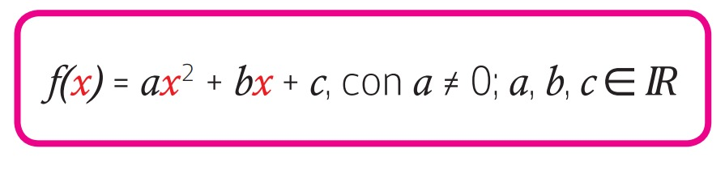
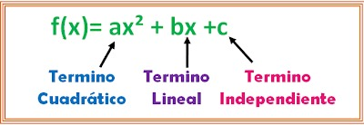

¿Qué es una función cuadrática?
Una función cuadrática es una función polinómica de segundo grado. Esto significa que la variable independiente (por lo general, "x") está elevada al cuadrado en su término de mayor grado.
Una función cuadrática es una función polinómica de segundo grado. Esto significa que la variable independiente (por lo general, "x") está elevada al cuadrado en su término de mayor grado.
La forma general de una función cuadrática es la siguiente:

Las letras a, b y c se llaman coeficientes de la función.

La expresión f(x) puede reemplazarse por la letra "y" que
representa a la variable dependiente de la función. Así la expresión del recuadro anterior, también se
puede escribir: y = ax² + bx + c
Algunas funciones cuadráticas:🤔
La forma algebraica de una función cuadrática tiene las siguientes características:
• Siempre hay un término que contiene la variable elevada al cuadrado. La mayoría de las veces esta
variable se designa por la letra x, pero también se pueden usar otras, por ejemplo, t.
• La expresión del lado derecho es un polinomio que tiene por lo general 3 términos, pero también puede
tener nada más que uno sólo como en el ejemplo (y = -x²); o solo 2 como y = 1 - 2t²
A veces una función cuadrática no está dada en su forma general como es el caso del ejemplo:
f(x) = 2(x – 3)² + 3 queda: y = 2x² - 12x + 21.
Obra publicada con Licencia Creative Commons Reconocimiento Compartir igual 4.0